print(4+12)16Cours 1
Toutes les informations importantes se trouvent sur le Moodle du cours.
CO 020, CO 021, CO 023 (salles avec ordinateurs)
CM 1 104, CM 1 106 (salles sans ordinateurs).
Le semestre d’automne est séparé en deux parties :
Aucun prérequis n’est demandé !
La matière sera évaluée à la fin de chaque partie.
Théorie et traitement de l’information à l’aide de programmes mis en œuvre sur ordinateurs. (Le Robert, 2024)
Le langage que nous allons utiliser dans le cadre de ce cours est le langage Python, car il est…
Dans ce cours, nous programmerons dans l’environnement de développement intégré (IDE) Jupyter Notebook sur la plateforme Noto.
Documentation. go.epfl.ch/noto-use. Problème de connexion ? Votre compte edu-ID doit être lié à l’EPFL : go.epfl.ch/noto-login.
Les données dans Python sont portées par des objets. Chaque objet a un type qui détermine sa structure et les opérations qu’on peut effectuer sur lui. Pour accéder au type d’un objet, on utilise type().
| Objet | Type |
|---|---|
42 |
int |
12.3 |
float |
'Appelez-moi Ishmael' |
str |
True |
bool |
None |
NoneType |
Remarque. Les int et les float sont tous deux des types numériques.
+, -, * et /.** calcule des puissances réelles.// et % calculent respectivement le quotient et le reste de la division entière (voir Série 1).print(4+12)16print(3-9)-6print(22*3)66print(12/8)1.5print(2**3)8Remarque. Dans un calcul, un int sera considéré comme un float au besoin.
+ effectue la concaténation de deux str.str * int permet la concaténation d’un str avec lui même.print('Appelez-moi' + ' ' + 'Ishmael')Appelez-moi Ishmaelprint('ha' * 3)hahahaprint('under my umbrella' + ' ella' * 2 + ' eh' * 3)under my umbrella ella ella eh eh ehLe casting nous permet de convertir un objet d’un certain type en un objet d’un autre type (en fait, un nouvel objet est créé).
int et float permettent de créer un objet du type correspondant à partir d’un autre type numérique ou même d’un str.print(int(2.7), ';', float(4))2 ; 4.0On peut perdre de l’information lors d’un casting, par exemple quand on cast un float en int.
Similairement, str permet de créer un objet de type str à partir d’un objet de type numérique.
print (2 * str (1.2))1.21.2x = 12+4
print(x)16x = bytes([*range(115,121)]).decode()[:5]
print(x)stuvwx = 7
print(x)
x='Sept'
print(x)7
Septx = 23
print(x, type(x))23 <class 'int'>x = bytes([*range(115,121)]).decode()[:5]
print(x, type(x))stuvw <class 'str'>Il vaut la peine d’examiner en détail ce qui se passe ici:
Python évalue d’abord l’expression à droite.
Ceci aboutit à un certain objet, que Python stocke en mémoire (s’il n’est pas déjà stocké).
Finalement, Python associe la variable à gauche comme référence pour désigner cet objet.
Cliquez pour voir les deux étapes :
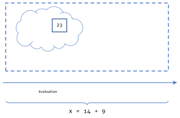
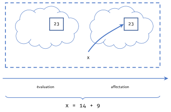
Remarque. Cela diffère du fonctionnement de l’égalité en mathématiques. En particulier, ce n’est pas symétrique !
Remarque. On peut affecter une variable, puis la réaffecter après. La variable désigne alors un nouvel objet, et l’ancien reste en mémoire sans plus être désigné.
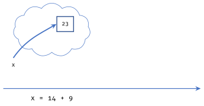
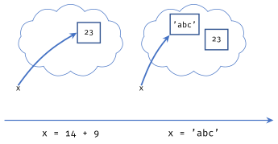
Qu’affiche le code suivant ?
x = 5
y = x
x = 10
print(x, y)10 5À la 2ième ligne :
x, cette expression s’évalue à 5.y comme référence à 5.À la 3ième ligne :
x est réaffectée à 10.Résumé. x = y ne crée pas un lien entre x et y, mais seulement un lien entre x et l’objet référencé par y.
Une ligne par clic :
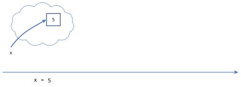
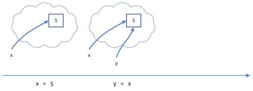
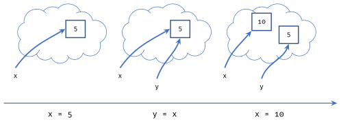
Si x est déjà une variable, il n’y a aucune raison pour que nous ne puissions pas la réaffecter à une expression qui contient x !
x = 3
x = x + 1
print(x)4x = 3
y = x
x = x + 1
print(x, y)4 3Pour écrire cela de manière plus concise, on utilise x += 1.
Remarque. Python propose d’autres affectations avec opération :
x *= 3 (multiplication),x -= 5 (soustraction),x /= 2 (division),x %= 3 (modulo), etc.Tous fonctionnent selon le même principe :
x op= y est équivalente à x = x op y.
L’expression est évaluée avant que x ne change de référence :
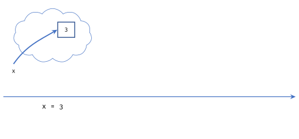
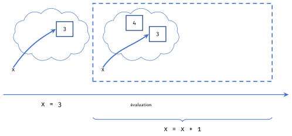
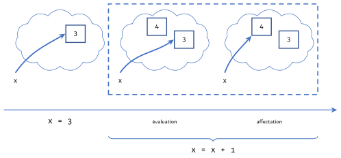
Python permet d’affecter plusieurs variables en une seule ligne :
x, y = 3, 4
print(x, y)3 4x, y = 3, 4, 5
print(x, y)--------------------------------------------------------------------------- ValueError Traceback (most recent call last) Cell In[22], line 1 ----> 1 x, y = 3, 4, 5 2 print(x, y) ValueError: too many values to unpack (expected 2)
Cette opération fonctionne ainsi :
= (ici 3 et 4).Remarque. Le nombre de variables à gauche doit correspondre au nombre d’expressions à droite, sinon Python génère une erreur.
On peut nommer une variable comme on veut, à condition…
Remarque. Même si on peut nommer une variable comme on veut, il vaut mieux utiliser des noms parlants, et suivre les conventions de nommage de variables.

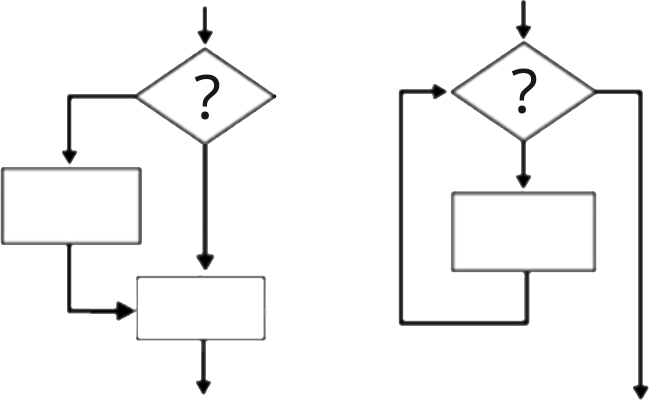
L’instruction if permet d’évaluer une condition, puis d’exécuter un bloc d’instructions si la condition est évaluée à True.
conditionA : une expression qui s’évalue à True ou à False.blocA : le bloc d’instructions exécuté uniquement si conditionA est vraie.import random
age = random.randint(0, 99)
comm = str(age) + ' est un bel âge.'
if age < 18:
to_maj = 18 - age
comm += ' ' + str(to_maj) + ' an(s) avant la majorité.'
print(comm)95 est un bel âge.Remarque. Le bloc d’instructions relatif à une condition if est délimité par une indentation. N’oubliez pas les deux-points après la condition.
L’instruction else suit une instruction if (facultativement) et permet d’exécuter un bloc alternatif lorsque la condition du if est évaluée à False.
conditionA est vraie, c’est blocA qui est exécuté ; sinon, c’est blocB.import random
age = random.randint(0, 99)
comm = str(age) + ' est un bel âge.'
if age < 18:
to_maj = 18 - age
comm += ' ' + str(to_maj) + ' an(s) avant la majorité.'
else:
comm += ' Vous êtes majeur(e) !'
print(comm)52 est un bel âge. Vous êtes majeur(e) !Remarque. Le bloc else est lui aussi introduit par des deux-points et délimité par une indentation.
L’instruction elif (contraction de «else if») permet de tester plusieurs conditions successives après un if initial.
else final reste facultatif : il attrape tous les cas restants.import random
age = random.randint(0, 99)
comm = str(age) + ' est un bel âge.'
if age < 18:
to_maj = 18 - age
comm += ' ' + str(to_maj) + ' an(s) avant la majorité.'
elif age < 65:
comm += ' Vous êtes majeur(e) et en âge de travailler !'
else:
comm += ' Profitez bien de votre retraite !'
print(comm)69 est un bel âge. Profitez bien de votre retraite !Remarque. On peut enchaîner autant de elif que l’on veut.
if/else/elif est illégal. Utilisez l’instruction pass.x, y = 3, 5
if x % 2 and x > 0:
pass
print(x + y)8On peut utiliser un if n’importe où dans notre code, y compris à l’intérieur d’un if ou d’un else précédent.
Si le bloc de code que vous souhaitez après un if/else/elif ne prend qu’une seule ligne, vous pouvez éviter l’indentation et simplement l’écrire sur la même ligne.
Comment marche Python
Python exécute les instructions ligne par ligne, de haut en bas.
#) sont ignorés, même au milieu d’une ligneRemarque.
printest l’outil qui permet d’afficher une ou plusieurs valeurs (séparées par des virgules). Nous l’utiliserons dès maintenant pour voir ce que fait notre code ; nous y reviendrons en détail plus tard.Remarque. Dans un notebook Jupyter (et dans la plupart des interpréteurs interactifs), la valeur de la dernière ligne d’une cellule s’affiche automatiquement, même sans
print. C’est une commodité de l’interpréteur, pas une règle de Python.